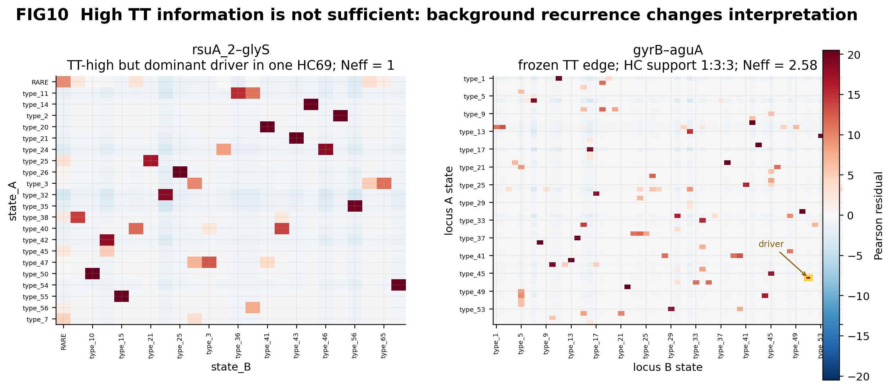
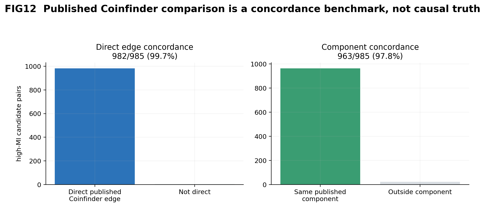
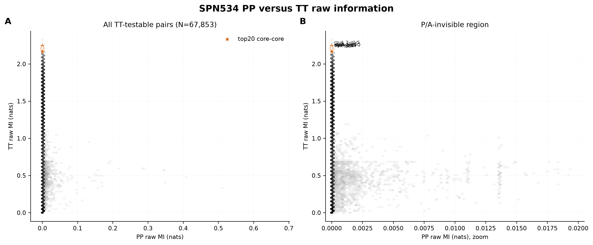
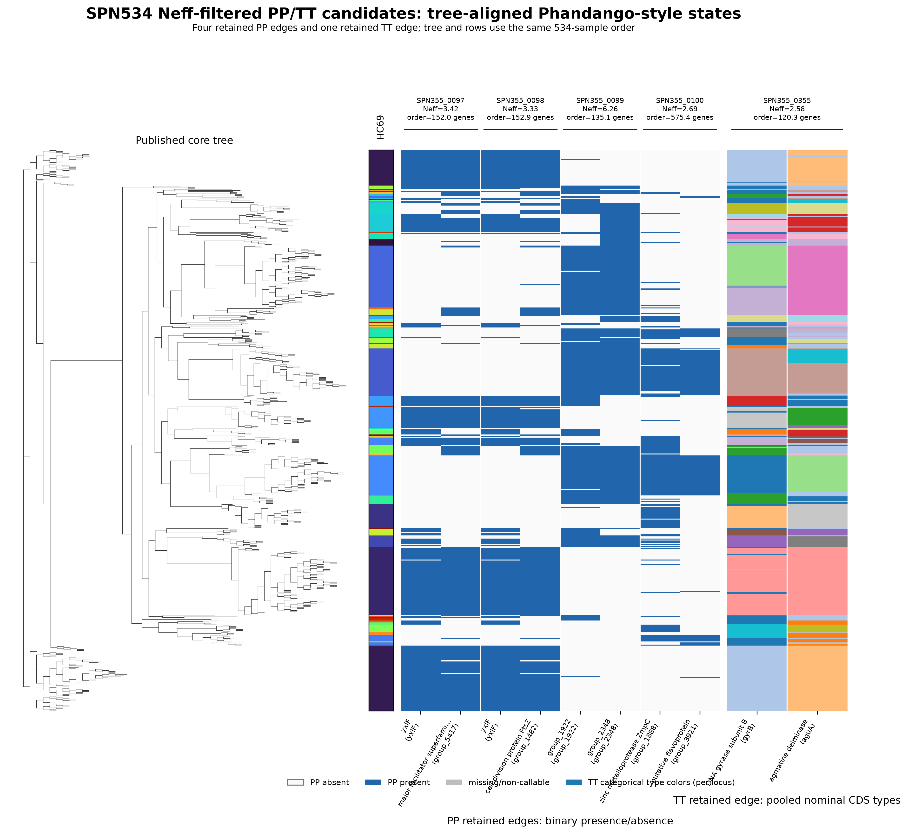
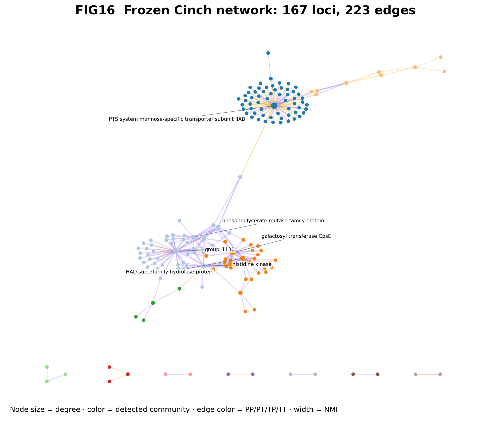

The search-space problem
Exhaustive SNP×SNP scans are enormous and fragment interpretation across nucleotide coordinates. Cinch instead uses the bacterial cg/wgMLST data reservoir as a gene/locus-level abstraction:
Two state variables, four channels
Allele IDs are nominal categories. MI is measured in nats:
A contingency residual identifies the driver state without turning MI into a signed or causal score.
Local-linkage evidence
At least five same-contig observations are required. Different-contig pairs remain NA. The frozen filter uses channel-specific Q99.9(MI|dorder) and dorder≥100 genes.

Take-home: local order/bp dependence decays toward a low baseline. Point area is proportional to √N. Order and bp share exactly 990,661 valid pairs and correlate at ρ=0.9973; order is retained for normalized, transferable locus units—not greater coverage.
Recurrence breadth is not recurrence evenness
HC69 is a single-linkage allele-difference level, not 69 clusters or an adjusted p/q model.
One retained edge and one rejection

Take-home: high TT information alone is insufficient when the driver is only a population identity tag.
Published comparator and information beyond P/A
982/985 high-MI audit pairs are direct published Coinfinder association/dissociation edges; 963/985 are in the same published component. This is concordance, not causal ground truth.

Take-home: Cinch recovers established P/A dependency structure while P↔T/TT define the additional information domain.

Take-home: the PP≈0 / TT-high region is invisible to presence/absence-only methods.
Frozen SPN534 evidence
The development snapshot retains 223 unordered candidates: PP 4, PT 58, TP 160 and TT 1. SPN534 informed development and is not an unseen validation cohort.

Take-home: state drivers are shown in their 534-isolate tree and HC69 context.
Candidate dependency network
The 167-locus/223-edge graph is a presentation of the network-ready table. It is pre-ARACNE; the frozen configuration has ARACNE=false and network_construction=false. Communities are descriptive.

Take-home: most candidates occupy one large component with several small disconnected components.